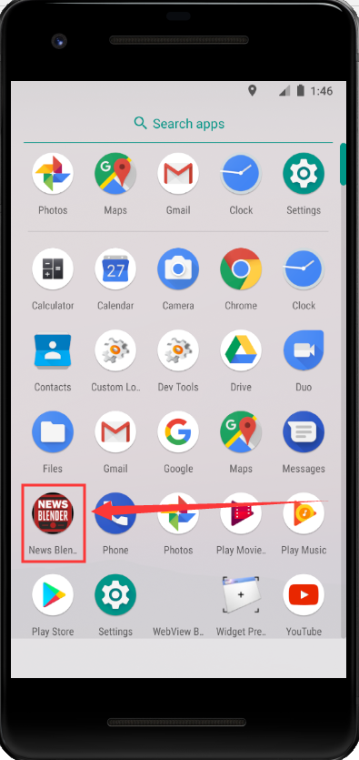
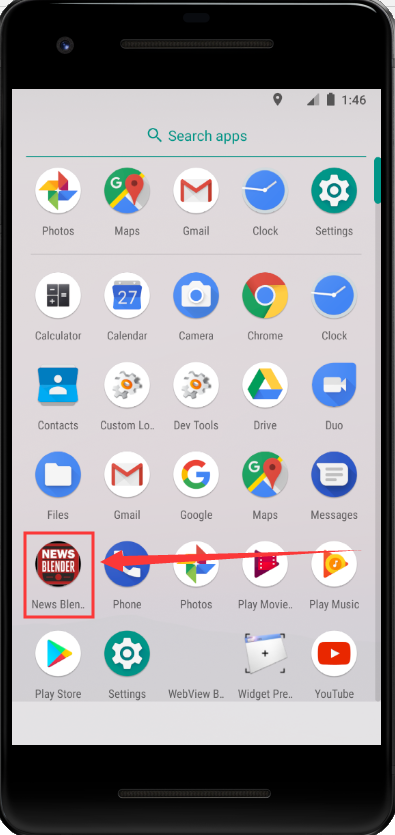

And of course add the internet permission in AndroidManifest.xml
To get a news i use newsapi website. Just need to register and get your private API key. I used Retrofit, a library that makes it pretty easy to send and retrieve data from a webservice. Is type-safe REST client for Android and Java which aims to make it easier to consume RESTful web services.
Next is to create data models to parse our sample JSON data with following structure.
In total have 3 Models:


In order to issue the network request to a REST API with Retrofit, we need to create an instance using Retrofit.Builder class and configure it with a base URL. In class ApiClient we have BASE_URL, this is the basic URL of our API where we will make a call.

In ApiInterface file, The endpoints are defined inside of an interface using special retrofit annotations to encode details about the parameters and request method.


Here when we requesting a list of news we get a specific news due to our request, in this case about bitcoin, and in the second GET function we are retrieving from all source news when we search by some keyword.
In MainActivity file have enqueue() function, this function asynchronously sends the request and notifies the app with a callback when a response comes back. Since this request is asynchronous, Retrofit handles it on a background thread so that the main UI thread isn't blocked or interfered with. To use the enqueue() function need to implement two other functions:
onResponse and onFailure()
Then we need an Adapter for binding data with RecycleView.
Then i implemented custom Floating Action Button to switch between the news articles, here i demonstrate only important code snippet for that

This function resides within onCreate() method body.
And i also implemented a quick tutorial for a new users, basically using flag it detects whether the app launched for the first time, if yes, it starts the tutorial. For that i used this library to implement that.
This piece of code responsible for that:

Before running the app, please register in newsapi website and get your own private API key and paste it in these 3 files:

The Share function is a bit poor, was planning to add share via Wechat platform, in the "Moments" and between friends, but faced a problem such as the need to register on the Tencent platform as a verified organization to get the rights to add this functionality within my application. Also, the app needs a stable internet connection and VPN in some cases.